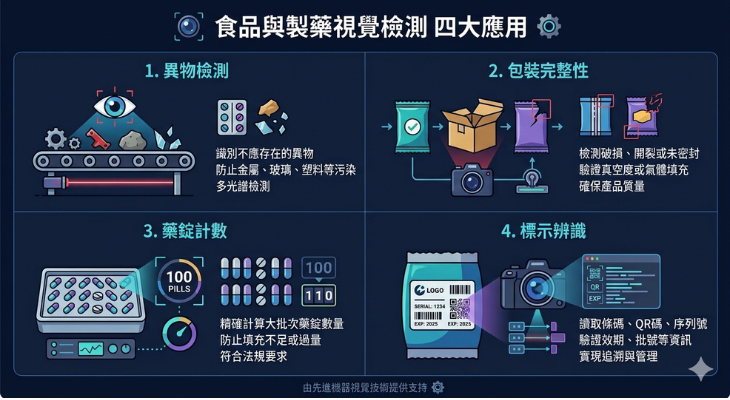

在食品與製藥產業，品質不只是競爭力，更是責任。一顆異物、一個破損的包裝、一張印錯的標示，輕則退貨賠償，重則危及消費者健康、觸犯法規。這也是為什麼這兩個產業對「檢測」的要求，遠比一般製造業嚴苛。
機器視覺正好能滿足這種「零容忍」的需求——它不會疲勞、不會分心，能對每一件產品做出穩定一致的判定。
為什麼食品與製藥特別需要視覺檢測
這兩個產業的檢測有幾個共通的嚴苛條件：
- 安全零容忍：異物、缺劑、標示錯誤都可能造成健康風險，不允許漏檢。
- 高速產線：包裝線動輒每分鐘數百件，人工根本跟不上。
- 法規合規：製藥有 GMP、食品有各項衛生法規，檢測結果往往需要記錄與可追溯。
- 多樣的檢測項目：從外觀、數量、標示到密封性，一條線上要顧的面向很多。
人工目檢在這種條件下，速度、穩定度與可追溯性都難以達標。視覺檢測則能把這些要求同時兼顧。
四大檢測應用
機器視覺在食品與製藥產線上，最常見的應用可歸納為四類：
- 異物檢測：檢出混入產品中的毛髮、塑膠、金屬碎屑等異物。這是食品安全的第一道防線。
- 包裝完整性：檢查密封是否確實、有無破損、封口是否對齊，避免產品在運送與保存中變質。
- 數量與劑量：例如藥錠的計數、缺錠檢測、膠囊填充量判斷，確保每一包的內容物正確。
- 標示與條碼辨識：辨識效期、批號、成分標示與條碼，確認印刷清晰、內容正確、可被掃描。

實際案例
炘智科技在食品與製藥領域已有實際導入經驗，例如：
- 泡麵異物檢測：在生產線上即時檢出混入的異物，有效攔截、保障食品安全。
- 食品條碼檢測：自動辨識與驗證包裝條碼，辨識率達 99.9%，杜絕條碼不良品出貨。
- 藥錠包裝檢測：以高速視覺系統檢測缺錠、破損與異物，檢測速度符合產線要求，確保包裝品質。
- 骨釘數量及尺寸量測：醫療器材的自動計數與精密量測，達到 100% 準確計數，符合醫療規範。
更多案例可參考我們的成功案例頁面。
導入時的合規重點
食品與製藥的視覺檢測，除了技術，更要考慮產業特有的合規需求：
- 可追溯性：檢測結果要能記錄、可回溯，符合 GMP 或食品追溯的要求。
- 無塵與衛生規範：設備需符合產線的潔淨等級，材質、防塵、易清潔都要納入考量。
- 驗證與確效：製藥產線導入新設備常需經過確效（Validation）流程，檢測系統要能配合。
- 穩定與可靠：安全關鍵的檢測寧可誤判也不能漏檢，系統的可靠度與判定邏輯要能對應法規責任。
在食品與製藥，檢測系統的價值不只在「找出不良品」，更在於「留下可追溯的證據」——這是這兩個產業和一般製造業最大的不同。
炘智科技的角色
食品與製藥的視覺檢測，考驗的不只是影像技術，更是對產業合規與現場條件的理解。炘智科技從需求評估開始，了解你的產線節拍、檢測項目與法規要求，再打造合適的視覺檢測方案，並負責與產線設備的整合。
如果你的食品或製藥產線正需要提升檢測的速度、準確率與可追溯性，歡迎與我們聯絡，一起找出最合適的做法。